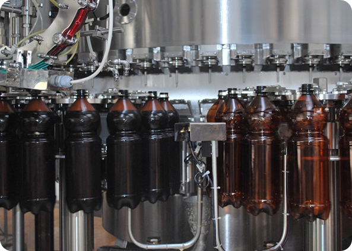

Квас, который пьём сами
Никаких концентратов. Только живое брожение, ржаной солод и любовь к своему делу.
Как появился Живас
Всё началось с рецепта моей бабушки. Она всегда говорила: «Настоящий квас должен пениться и пахнуть хлебом, а не химией». Мы долго экспериментировали, подбирали пропорции солода и ржи, и в итоге получился тот самый вкус — живой, насыщенный, с пузырьками естественного брожения.
Сначала варили для друзей и семьи. Потом друзья стали просить «ещё пару бутылочек». А когда знакомые начали заказывать ящиками, поняли — пора открывать свою маленькую лавку. Так родился Квас-Живас.

Как мы делаем живой квас
Выбираем зерно
Только ржаной солод и натуральный хлеб. Без концентратов и порошковых основ.
Варим и бродим
Классическое брожение в чанах. Живые дрожжи работают сами — мы не форсируем процесс.
Разливаем свежим
Розлив сразу после созревания. Короткий срок годности — признак живого продукта.
📍 Где попробовать и купить
Наш магазин: ул. Оборонная, 7 (ежедневно 11:00–22:00)
Доставка: по городу при заказе от 1000 ₽
Розлив: приходите со своей тарой — нальём свежего прямо из бочки
📞 +7 (999) 123-45-67